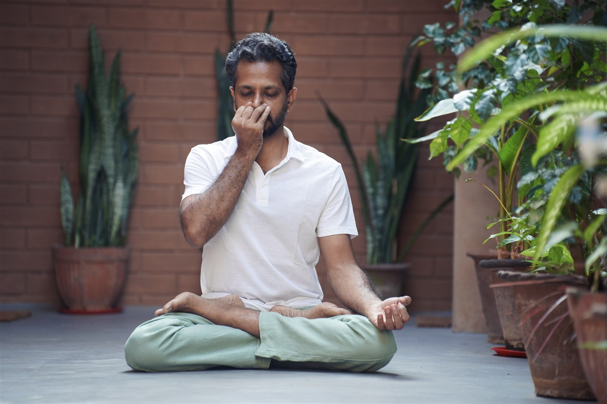

Mysore & live online
Prana Urja Breath as a direct path back to self.
A one-month pranayama course, rooted in traditional Hatha Yoga. Learn progressively, understand each technique and build a practice you can continue independently.

01 / The breath
Learn pranayama.
Build a steady practice.
Prana Urja is a four-week pranayama course rooted in the Hatha Yoga tradition. Each week builds gently on the last, with clear instruction in technique, posture and breathing rhythm, followed by time to notice the effects.
Yoga philosophy is explored through the practice: attention, habitual responses and the koshas, the traditional layers of human experience. The emphasis is on connecting these ideas with what you actually feel and observe.
Beginners receive a clear foundation, while practitioners and teachers can refine their understanding and approach. You learn how to adapt the practice and develop the confidence to continue with clarity and consistency.
- 01Method: learn the structure and purpose of each technique.
- 02Experience: notice the physical and mental response.
- 03Independence: build a practice you can continue with clarity.


Who it is for
A foundation for beginners.
Depth for teachers.
- Beginners who want a clear and progressive introduction
- Yoga practitioners and teachers deepening their understanding
- People interested in understanding their breathing and habitual responses
- Students ready to practise regularly across the month